L6 - AM Simulation#
AM Simulation
DSB-AM, DSB-SC, and SSB built and demodulated in GNU Radio.
Lesson 6 · Module 3: Analog Modulation · Dr. Neil Rogers
Slides
Learning Objectives
- I can describe DSB-AM, DSB-SC, and SSB and identify each on a spectrum.
- I can implement an AM modulator and demodulator in GNU Radio and verify demodulated audio against the source.
A Message on a Carrier
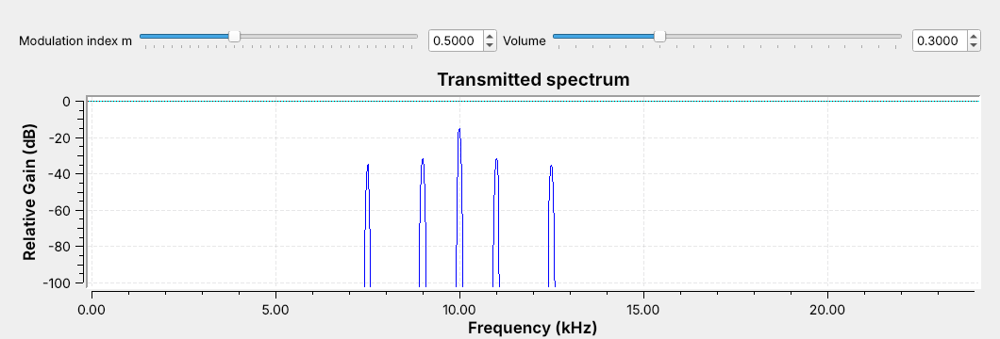
Modulation moves an audio message up to a carrier frequency.
Today’s signal: a two-tone message on a 10 kHz carrier, as DSB-AM.
Modulation moves an audio message up to a carrier frequency, so each transmitter gets its own channel. Varying the carrier’s amplitude with the message is amplitude modulation (AM), still on the air in AM broadcast, every aircraft radio, and HF voice links.
Open L06-dsb-am.grc and run it; no hardware is needed. The figure is its frequency sink. The message is two tones, 1 kHz and 2.5 kHz, on a 10 kHz carrier. The tall line in the middle is the carrier, and each tone makes a pair of lines on either side of it. Today we build this signal and two relatives, receive each one, and check the output against the message.
Part 1: DSB-AM
\(m\) is the modulation index; the bracket is the envelope.
A tone at \(f\) makes sidebands at \(f_c - f\) and \(f_c + f\).
The bandwidth is \(2W\), here 5 kHz (7.5 to 12.5 kHz).
Double-sideband AM (DSB-AM, or simply AM) multiplies a carrier at \(f_c\) by one plus the scaled message. The message \(x(t)\) stays between \(-1\) and 1, and the modulation index \(m\) is the slider that sets how far the carrier’s amplitude swings: at \(m = 0.5\), between 0.5 and 1.5 times \(A_c\). The bracket is the envelope, the outline of the carrier’s peaks, which is a copy of the message riding on a constant.
Multiplying by the carrier shifts the message’s spectrum up to \(f_c\). The constant 1 becomes the carrier line, and each message tone at \(f\) becomes two lines, one at \(f_c + f\) in the upper sideband and one at \(f_c - f\) in the lower sideband. On the opening figure the sideband lines sit well below the carrier, and the louder 1 kHz tone makes the taller pair; raise \(m\) and every sideband line grows while the carrier stays put. The signal occupies \(f_c - W\) to \(f_c + W\), where \(W\) is the highest message frequency, so its bandwidth is \(2W\), 5 kHz for our message. The FCC spaces US AM broadcast stations 10 kHz apart for the same reason: each carries about 5 kHz of audio.
The DSB-AM Flowgraph
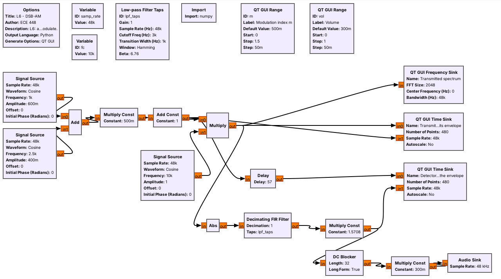
The top row is the transmitter, and the bottom row is the receiver.
The Audio Sink paces the flowgraph, so there is no Throttle.
The top row of L06-dsb-am.grc is the transmitter, block for block from the equation: two Signal Sources add to make \(x(t)\), a Multiply Const applies \(m\), an Add Const adds the 1, and a Multiply mixes the result with a third Signal Source at \(f_c\). Its output goes to a frequency sink and to a time sink that overlays the modulated signal on its envelope \(1 + m\,x(t)\). The bottom row is the receiver, an envelope detector, which the next frames take apart. Its output goes to a second time sink for checking and, through a DC Blocker and a volume slider, to an Audio Sink, so we can listen to it.
The whole flowgraph runs at 48 kHz, a rate every laptop sound card supports. Lesson 5 said to use a Throttle only when no hardware sets the pace. The sound card is hardware: it takes exactly 48,000 samples per second, so the Audio Sink sets the pace and a Throttle would only cause audio dropouts.
Modulation Index
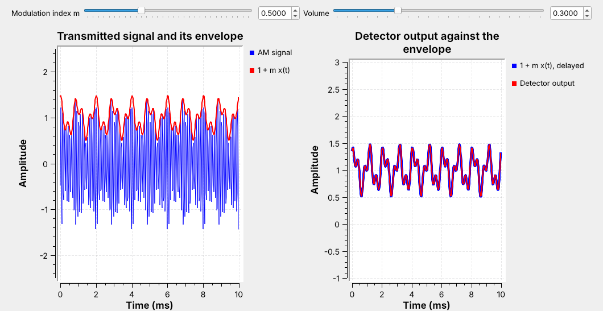
Left: the carrier fills in under its envelope, \(1 + m\,x(t)\).
Right: the detector output lies on the envelope.
The left time sink shows 10 ms of the transmitted signal in blue, with the envelope \(1 + m\,x(t)\) in red. The carrier is 10 kHz, so 100 cycles fill the window and blur into a solid band, and the red trace outlines its peaks. The pattern repeats every 2 ms because 1 kHz and 2.5 kHz are both multiples of 500 Hz.
The right time sink compares the receiver’s output, in red, with the envelope in blue. The two traces lie on top of each other, which is the check the objective asks for: the demodulated signal matches the source. The receiver’s low-pass filter delays everything that passes through it by half its length, so the flowgraph’s Delay block holds the envelope back the same 57 samples before the comparison.
The Envelope Detector
Abs rectifies: it keeps the carrier’s peaks positive.
A low-pass filter at 3 kHz keeps the envelope and removes the carrier.
Multiply by \(\pi/2\) to restore the level.
An AM receiver only has to recover the envelope; a diode and a capacitor do it in hardware. The bottom row of the flowgraph does the same with blocks. Abs is the diode: it flips the carrier’s negative half-cycles up. The low-pass filter is the capacitor: it keeps the slowly varying envelope and removes the rest. After Abs, the envelope sits near 0 Hz and the rest of the signal sits at higher frequencies, which the filter of the next frame removes.
Averaging the rectified carrier leaves \(2/\pi\) of its peak, so a Multiply Const of \(\pi/2\) restores the envelope’s original level. The DC Blocker then removes the constant 1, which carries no information, before the audio reaches the speaker.
Low-pass Filter Taps
Cutoff 3 kHz and transition 1 kHz define the filter.
GNU Radio picks the length: 115 taps.
The output lags by half the taps: 57 samples, or 1.2 ms.
The Low-pass Filter Taps variable designs a filter from the sample rate, a cutoff frequency, a transition width, and a window, and a Decimating FIR Filter block with decimation 1 applies it. We choose a 3 kHz cutoff and a 1 kHz transition, so the filter passes everything up to about 2.5 kHz, which keeps both message tones, and stops everything above about 3.5 kHz.
GNU Radio sets the number of taps from the transition width: a narrower transition needs a longer filter, and 1 kHz at 48 kHz gives 115 taps. A filter with \(N\) taps delays its output by \((N-1)/2\) samples, 57 here. The Delay block uses the expression len(lpf_taps)//2, so it follows the filter if we change it. Every receiver in this lesson uses these taps.
Overmodulation
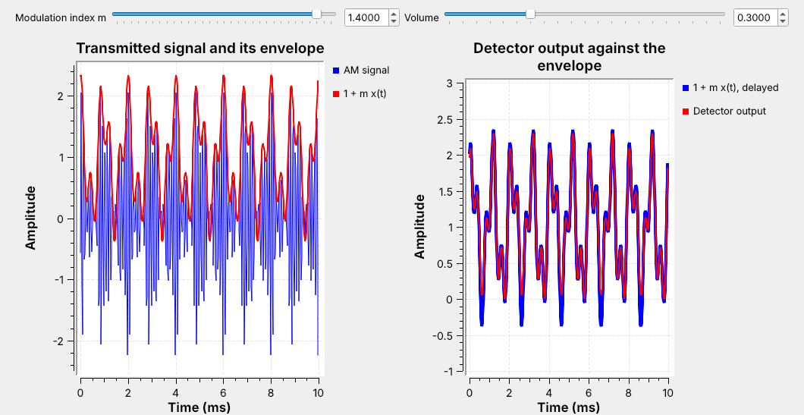
Push \(m\) too far and the envelope goes negative; the detector folds it up.
The audio distorts, and the spectrum spreads.
Keeping \(m \le 1\) guarantees no overmodulation for any message with \(\vert x(t)\vert \le 1\). Past that, the bracket \(1 + m\,x(t)\) goes negative at the message’s deepest troughs. Our message never quite reaches \(-1\), so on the slider the trouble starts a little above \(m = 1\). The carrier’s amplitude cannot be negative, so the detector sees the dips fold back up, as the right panel’s red trace shows at \(m = 1.4\), and the output no longer matches the message. This is overmodulation.
Drag \(m\) slowly from 0.5 to 1.4 with the audio on. Watch for the red trace to split from the envelope, listen for the tones to turn harsh, and watch new lines appear on the frequency sink, spreading into the neighboring channel. That is why AM transmitters keep \(m\) below 1.
Part 2: DSB-SC
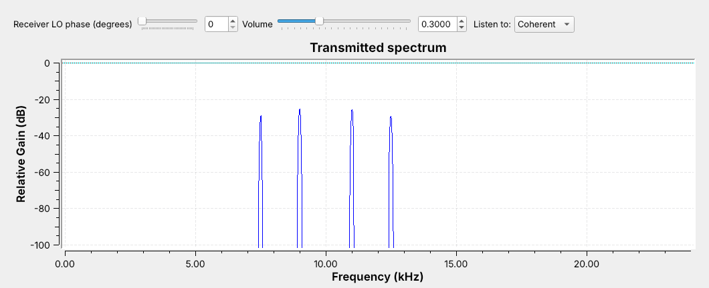
No carrier line: all of the power goes into the sidebands.
Double-sideband suppressed carrier (DSB-SC) drops the 1 from the bracket and multiplies the carrier by the message alone. Open and run L06-dsb-sc.grc: its transmitter is the DSB-AM one with the Multiply Const and Add Const removed. The frequency sink shows the same four sideband lines and the same 5 kHz bandwidth, and nothing at 10 kHz. On the DSB-AM spectrum the carrier was the tallest line, yet it carries no information; it is there to keep the receiver simple.
Without the carrier, the envelope is \(\vert x(t)\vert\), because the message itself goes negative. An envelope detector outputs that folded signal, the same as overmodulation, so DSB-SC needs a different receiver.
Coherent Demodulation
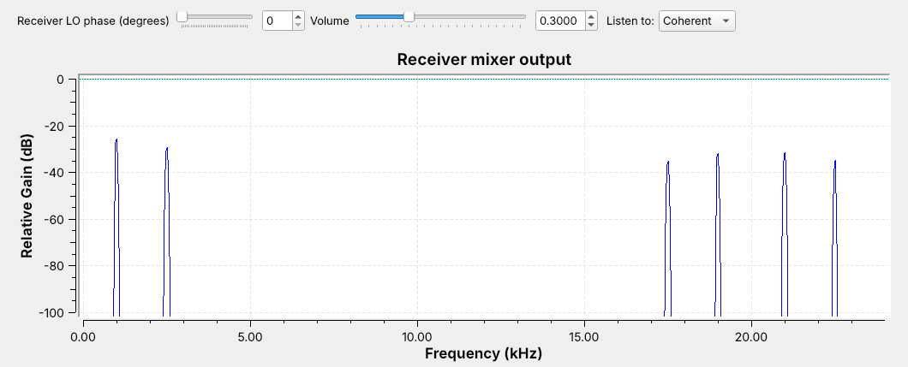
Multiplying by the LO puts the message back near 0 Hz, with a copy near 20 kHz.
The low-pass filter keeps the message.
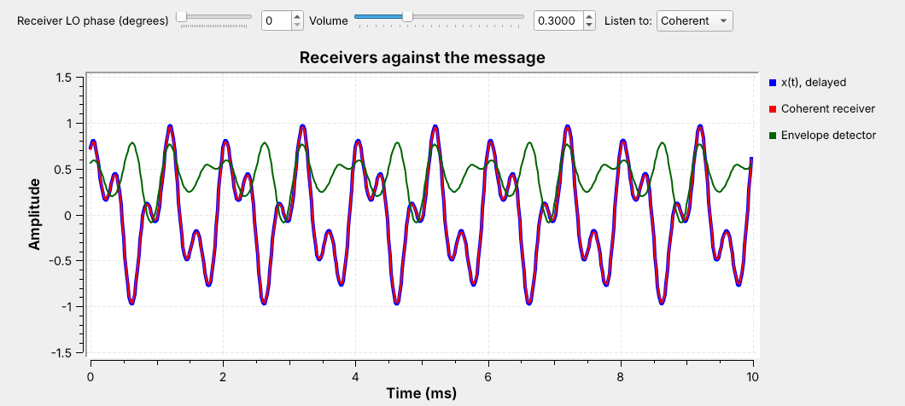
A coherent receiver, also called a product detector, multiplies the received signal by its own copy of the carrier, a local oscillator (LO), and low-pass filters the product. The figure is a frequency sink on that Multiply’s output: the message is back at 1 and 2.5 kHz, with a copy around 20 kHz that the filter removes. A Multiply Const of 2 restores the level.
The flowgraph builds both receivers side by side. On its time sink, above, the message is blue, the coherent receiver is red on top of it, and the envelope detector is green and does not match. Switch the Listen To menu between Coherent and Envelope and hear the difference.
The LO Must Match
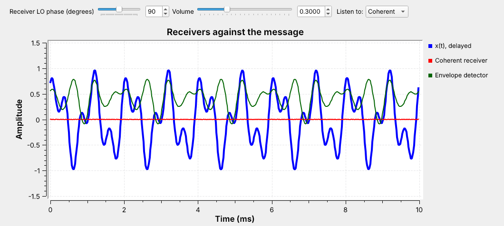
An LO phase error makes the output smaller.
At \(90°\) the output is zero.
The coherent receiver works only if its LO matches the transmitter’s carrier in both frequency and phase. Drag the LO phase slider and watch the red trace: a small phase error lowers the volume, and at \(90°\) the output vanishes, as the flat red trace shows. A frequency error is worse: the phase drifts continuously and the output fades in and out.
Here both oscillators come from the same fc variable, so they match. A real DSB-SC receiver has no carrier to copy, so the transmitter has to help. FM stereo sends a 19 kHz pilot tone so receivers can rebuild the 38 kHz LO for its DSB-SC subcarrier; Lesson 7 shows it in the FM multiplex.
Part 3: SSB
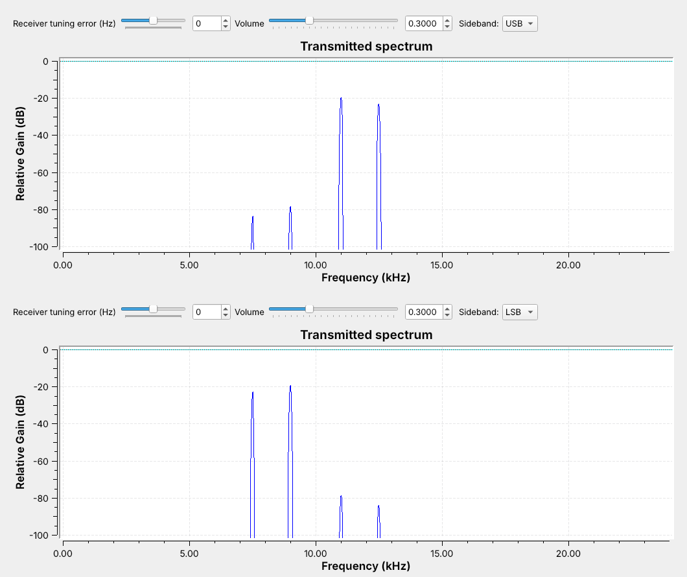
The two sidebands carry the same information. SSB sends one.
Its bandwidth is \(W\) = 2.5 kHz, half that of DSB.
The two sidebands are mirror images, so either one alone carries the whole message. Single sideband (SSB) sends one: the upper sideband (USB) or the lower sideband (LSB). It has no carrier and needs half the bandwidth, which is why it is the standard for long-range HF voice.
Open and run L06-ssb.grc and switch its Sideband menu; the figure shows both settings. With USB selected, the lines at 11 and 12.5 kHz remain and the lower pair sits far below the kept lines. With LSB selected, only the lines at 9 and 7.5 kHz remain. Note that the LSB reverses the message’s spectrum: the higher tone is the line farther below the carrier.
The Phasing Method
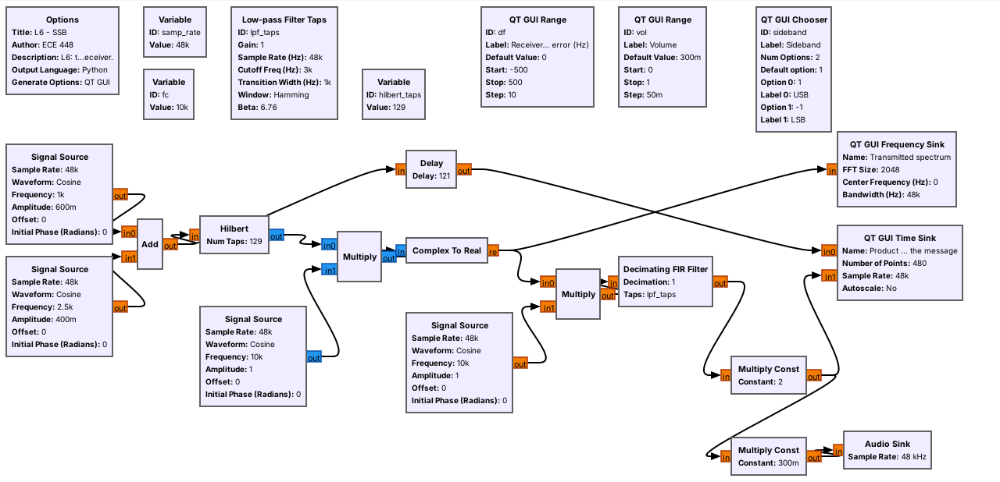
The flowgraph makes SSB by the phasing method, as in the GNU Radio wiki’s SSB transceiver example. The Hilbert block turns the message into a complex signal with only positive frequencies, like Lesson 5’s complex tone that turned in one direction.
A Multiply by a complex Signal Source at \(+f_c\) moves those frequencies to just above \(f_c\), and Complex To Real gives the USB. The Sideband menu just flips the source’s frequency to \(-f_c\) for LSB. The Hilbert block is a 129-tap filter, and its imperfection is why the unwanted sideband sits far below the kept lines rather than gone.
Receiving SSB
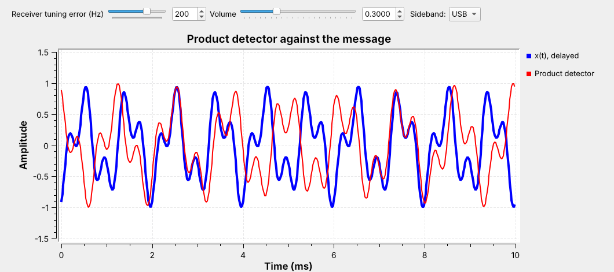
A product detector at \(f_c\) recovers \(x(t)\) from either sideband.
A tuning error \(\Delta f\) shifts every audio tone by \(\Delta f\).
The SSB receiver is the same product detector as DSB-SC: multiply by a cosine at \(f_c\), low-pass filter, and multiply by 2. Tuned exactly, its output lies on the message for USB and LSB alike. Now select USB and drag the tuning slider to \(+200\) Hz: every tone moves down by 200 Hz, so the traces drift apart, as in the figure. On LSB the same error raises the tones.
Listen while you drag. The pitch shifts, but the audio never fades, and a voice stays intelligible out to about 100 Hz of error. That is why an SSB receiver needs no carrier recovery: the operator turns the tuning knob until the voice sounds natural.
AM Explorer
The left panel plots 2 ms of the signal, its envelope in red, and the message in dashed amber; the right panel shows the spectral lines around the 10 kHz carrier. It starts with one tone and DSB-AM at \(m = 0.5\); notice the envelope follow the message. Raise \(m\) past 1 and watch the envelope fold. Then switch to two tones, the flowgraphs’ message, and drag \(m\) again. Switch to DSB-SC and the carrier line disappears, while the envelope becomes \(\vert x(t)\vert\). Switch to USB or LSB and notice the bandwidth halve, and that the envelope of the two-tone SSB signal is not the message at all, which is why SSB needs a product detector.
Identifying Each on a Spectrum
Signal |
Carrier line |
Sidebands |
Bandwidth |
Receiver |
|---|---|---|---|---|
DSB-AM |
yes |
two |
\(2W\) |
envelope |
DSB-SC |
no |
two |
\(2W\) |
coherent |
SSB |
no |
one |
\(W\) |
product |
On any spectrum display, ask two questions. Is there a steady line at the center? Only DSB-AM has one. Is the signal symmetric about its center? DSB-AM and DSB-SC are; SSB sits on one side, above the carrier frequency for USB and below for LSB. A voice SSB signal on a waterfall is a band about 3 kHz wide that comes and goes with speech, with no line beside it.
The last column says what to build to receive each one.
Key Point
DSB-AM puts most of its power in a carrier so the receiver can be an envelope detector. DSB-SC and SSB drop the carrier, and the receiver has to supply its own.
On the SDR
AM broadcast uses 540 to 1700 kHz, and aircraft use AM from 118 to 137 MHz.
Long-range HF voice uses SSB.
On an SDR, the envelope detector is one block: Complex to Mag.
Each of today’s signals is on the air. AM broadcast fills 540 to 1700 kHz, and every aircraft and control tower talks in AM between 118 and 137 MHz, including the recorded airport weather broadcasts (ATIS), which make a good first target for Lesson 7’s AM receiver. SSB carries long-range HF voice: military and maritime stations use USB, and amateurs use LSB below 10 MHz and USB above it. DSB-SC rides inside every FM stereo broadcast.
An SDR delivers complex samples centered on its tuned frequency, so a signal arrives with its carrier already at 0 Hz. The envelope is then the magnitude of each sample, and the whole envelope detector is one Complex to Mag block, which is what GNU Radio’s AM Demod block contains. An SSB receiver on an SDR keeps the real part after a frequency shift. Lesson 7 builds the AM receiver around a PlutoSDR.
Downloads and Sources
L06-dsb-am.grc: a two-tone message as DSB-AM on a 10 kHz carrier, with an envelope detector, a modulation-index slider, and audio out. No hardware needed.
L06-dsb-sc.grc: the same message as DSB-SC, with a coherent receiver and an envelope detector side by side and an LO phase slider.
L06-ssb.grc: the same message as USB or LSB by the phasing method, with a product detector and a tuning-error slider.
Each flowgraph plays its receiver’s output through your laptop’s speakers; start with the volume low. Open a .grc file from GRC’s File menu, or run gnuradio-companion L06-dsb-am.grc from the radioconda prompt.
This lesson follows Dr. Rogers’s 2025 slides, AM Simulation, which set the topics, and these pages:
GNU Radio wiki, Simulation example: Single Sideband transceiver, for the SSB build
GNU Radio wiki, Your First Flowgraph and Runtime Updating Variables, for the sliders that set \(m\), the LO phase, and the tuning error
PySDR, Filters, which the 2025 deck cites, for the low-pass filter
The deck’s opening sampling and data-type demos are in Lesson 5.
Summary
Signal |
Transmitter |
Spectrum |
Receiver |
Number to remember |
|---|---|---|---|---|
DSB-AM |
\([1 + m\,x(t)]\cos(2\pi f_c t)\) |
carrier and two sidebands, \(2W\) |
Abs, low-pass, \(\times\pi/2\) |
\(m \le 1\) |
DSB-SC |
\(x(t)\cos(2\pi f_c t)\) |
two sidebands, \(2W\) |
multiply by LO, low-pass, \(\times 2\) |
\(90°\) LO error: no output |
SSB |
\(\mathrm{Re}\{z(t)\,e^{\pm j2\pi f_c t}\}\) |
one sideband, \(W\) |
product detector at \(f_c\) |
\(\Delta f\) shifts the audio |
Practice
Looking Ahead
The L6 Lab builds DSB-AM from an empty canvas and measures DSB-SC and SSB.
Lesson 7 receives real AM and FM with a PlutoSDR.
Today we built DSB-AM, DSB-SC, and SSB transmitters in GNU Radio, received each one, and compared the output with the message on a time sink and by ear. The L6 Lab is the hands-on version: build the DSB-AM flowgraph yourself, find its overmodulation point with the slider, and then watch and listen to what LO phase and tuning errors do to the DSB-SC and SSB receivers.
Lesson 7 replaces the simulated transmitter with the air. A PlutoSDR delivers complex samples, the envelope detector becomes a Complex to Mag block, and we receive an aircraft band AM station, then a broadcast FM station with its RDS data.